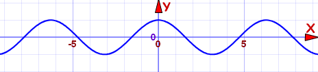
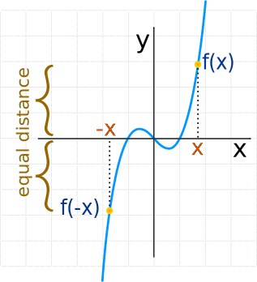
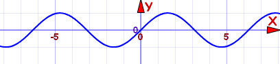
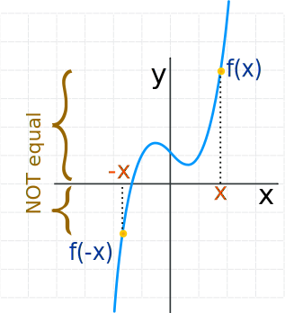

Even and Odd Functions
They are special types of functions
Even Functions
A function is "even" when:
f(x) = f(−x) for all x
In other words there is symmetry about the y-axis (like a reflection):

This is the curve f(x) = x2+1
They got called "even" functions because the functions x2, x4, x6, x8, etc behave like that, but there are other functions that behave like that too, such as cos(x):

Cosine function: f(x) = cos(x)
It is an even function
But an even exponent does not always make an even function, for example (x+1)2 is not an even function.
Odd Functions
A function is "odd" when:
−f(x) = f(−x) for all x
Note the minus in front of f(x): −f(x).
And we get origin symmetry:

This is the curve f(x) = x3−x
They got called "odd" because the functions x, x3, x5, x7, etc behave like that, but there are other functions that behave like that, too, such as sin(x):

Sine function: f(x) = sin(x)
It is an odd function
But an odd exponent does not always make an odd function, for example x3+1 is not an odd function.
Neither Odd nor Even
Don't be misled by the names "odd" and "even" ... they are just names ... and a function does not have to be even or odd.
In fact most functions are neither odd nor even. For example, just adding 1 to the curve above gets this:

This is the curve f(x) = x3−x+1
It is not an odd function, and it is not an even function either.
It is neither odd nor even
Even or Odd?
Example: is f(x) = x/(x2−1) Even or Odd or neither?
Let's see what happens when we substitute −x:
So f(−x) = −f(x) , which makes it an Odd Function
Even and Odd
The only function that is even and odd is f(x) = 0
Special Properties
Adding:
- The sum of two even functions is even
- The sum of two odd functions is odd
- The sum of an even and odd function is neither even nor odd (unless one function is zero).
Multiplying:
- The product of two even functions is an even function.
- The product of two odd functions is an even function.
- The product of an even function and an odd function is an odd function.